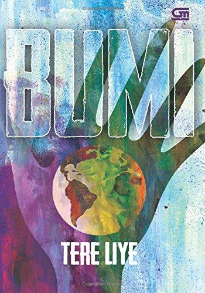

Kami hadir sebagai pusat informasi, pembelajaran, dan literasi yang menyediakan berbagai koleksi serta layanan untuk mendukung kebutuhan belajar, penelitian, dan pengembangan wawasan. Melalui website ini, kami berharap masyarakat dapat mengakses informasi perpustakaan dengan lebih mudah, cepat, dan nyaman.
Semoga Website Perpustakaan Cemerlang menjadi sarana yang bermanfaat untuk meningkatkan minat baca, memperluas pengetahuan, serta mendukung terciptanya generasi yang cerdas, kreatif, dan berkarakter.
Terima kasih atas kunjungan Anda. Selamat membaca dan teruslah belajar.
Perpustakaan Cemerlang menyediakan berbagai layanan untuk memenuhi kebutuhan informasi dan pembelajaran bagi seluruh pemustaka, antara lain:
Perpustakaan Cemerlang melayani pengunjung pada jadwal berikut:
| Hari | Jam Operasional |
|---|---|
| Senin | 08.00 - 16.00 |
| Selasa | 08.00 - 16.00 |
| Rabu | 08.00 - 16.00 |
| Kamis | 08.00 - 16.00 |
| Jumat | 07.30 - 15.30 |
| Sabtu | 07.30 - 12.00 |
| Atomic Habits | .jpg) |
Atomic Habits adalah buku pengembangan diri karya James Clear yang terbit pada 2018. Buku ini terkenal karena menjelaskan bagaimana perubahan kecil yang dilakukan secara konsisten dapat menghasilkan dampak besar dalam jangka panjang, dan telah menjadi salah satu buku kebiasaan serta produktivitas paling berpengaruh di dunia. |
| The Alchemist |  |
The Alchemist adalah novel alegoris karya Paulo Coelho yang pertama kali terbit pada 1988. Kisahnya mengikuti perjalanan seorang penggembala muda bernama Santiago yang mengejar harta karun setelah menerima petunjuk melalui mimpi. Novel ini menjadi salah satu buku paling sukses dalam sejarah penerbitan modern dan telah diterjemahkan ke puluhan bahasa. |
| Laskar Pelangi |  |
Laskar Pelangi adalah novel karya Andrea Hirata yang pertama kali diterbitkan pada 2005. Novel ini menjadi salah satu karya sastra Indonesia paling berpengaruh pada abad ke-21 karena mengangkat tema pendidikan, kemiskinan, persahabatan, dan harapan melalui kisah anak-anak di Belitung, serta kemudian diadaptasi ke film dan berbagai bentuk pertunjukan. |
| Bumi |  |
Bumi adalah novel fantasi karya Tere Liye dan menjadi buku pembuka dalam Serial Bumi. Novel ini memperkenalkan dunia paralel yang luas melalui petualangan tiga remaja, memadukan fantasi, aksi, misteri, dan kisah persahabatan sehingga menjadi salah satu seri fantasi Indonesia yang paling dikenal. |
| Harry Potter |  |
Harry Potter, seorang anak yatim yang dibesarkan oleh keluarga Dursley, mengetahui pada ulang tahunnya yang kesebelas bahwa ia adalah seorang penyihir. Di Hogwarts School of Witchcraft and Wizardry, ia berteman dengan Ron Weasley dan Hermione Granger, lalu terlibat dalam misteri yang mengelilingi Philosopher's Stone, sebuah benda legendaris yang diyakini dapat memberikan keabadian melalui Elixir of Life. |